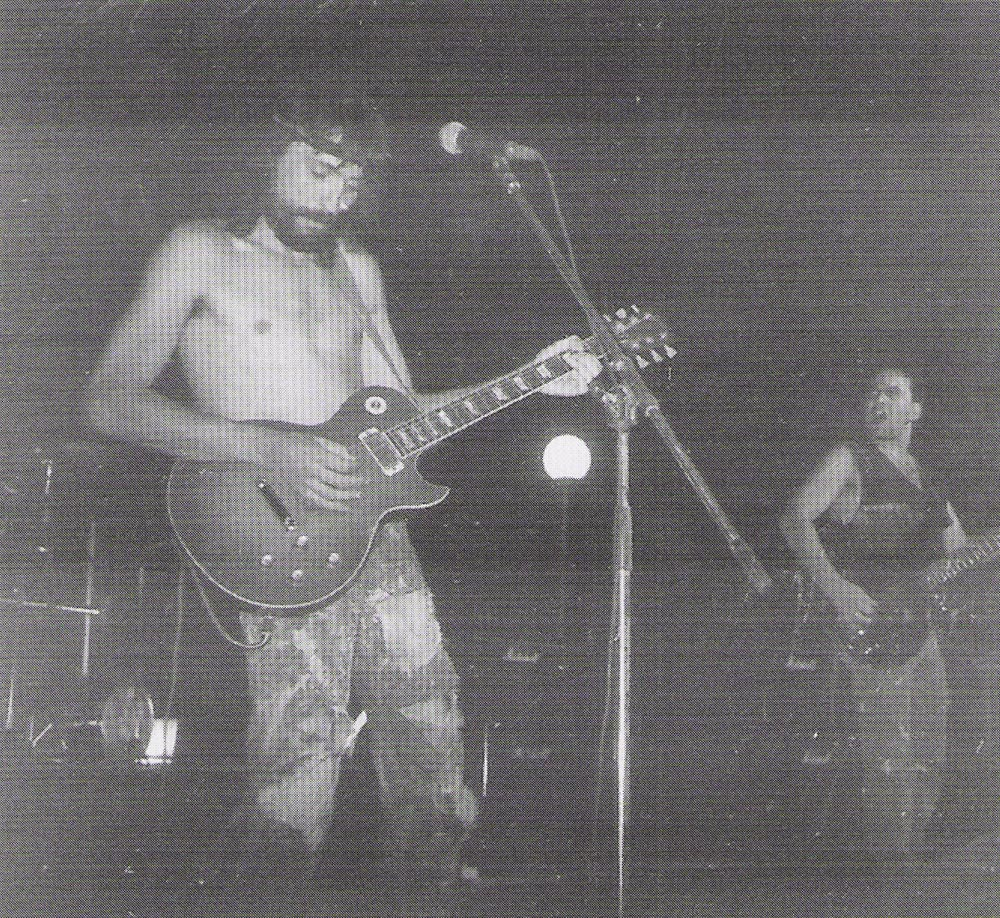

1997 · Neix a Plasencia
Extremoduro es forma a Plasencia (Càceres) i comença a tocar a locals de la zona.


Extremoduro va néixer a Plasència a finals dels anys vuitanta i es va convertir en una de les bandes més influents del rock en espanyol, amb un estil marcat per les lletres poètiques i directes i per un directe molt intens.
Extremoduro es forma a Plasencia (Càceres) i comença a tocar a locals de la zona.
